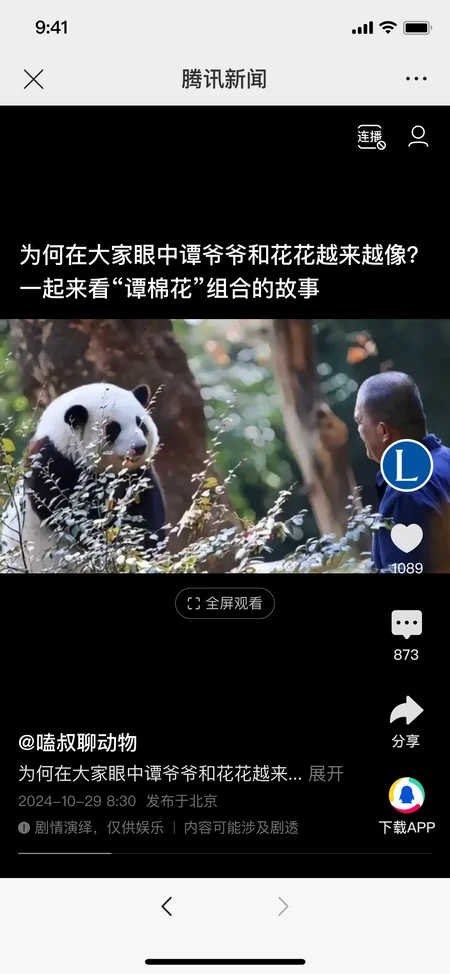
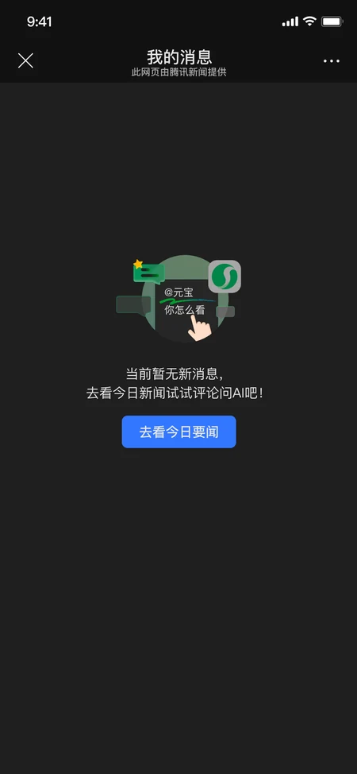

从不同内容，进入评论。
图文与沉浸流有不同的阅读界面。分别呈现评论展开方式、回复层级与长列表，让讨论仍有清晰的内容上下文。

交互展示基于已交付页面制作。选择两侧胶囊查看场景与状态，不会实际登录、发送评论或打开其他应用。
插件生态仍在逐步完善。这次增长迭代，围绕评论参与与消息回访补齐功能，让阅读之外的互动也有对应的页面承接。
在既有插件体验与设计规范下，完成新增功能页面和交互状态的绘制。本页以交付稿展示评论参与、消息回访与边界状态。
图文与沉浸流有不同的阅读界面。分别呈现评论展开方式、回复层级与长列表，让讨论仍有清晰的内容上下文。
展示未登录提示、输入键盘、@ 选择与选中状态，以及发布成功反馈。重点是动作之后出现什么，而不只展示静态成果。
从入口提示，到消息列表，再回到对应评论。
图文头像入口与沉浸流菜单，通过红点提示消息状态。
在“我的消息”中查看回复内容与关联上下文。
通过评论定位状态，衔接消息阅读与内容内的讨论。
已读历史、评论删除、空消息与外部应用确认，
共同构成完整交付中的边界状态。


插件内评论 × 沉浸流评论区功能优化